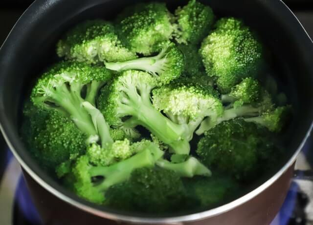
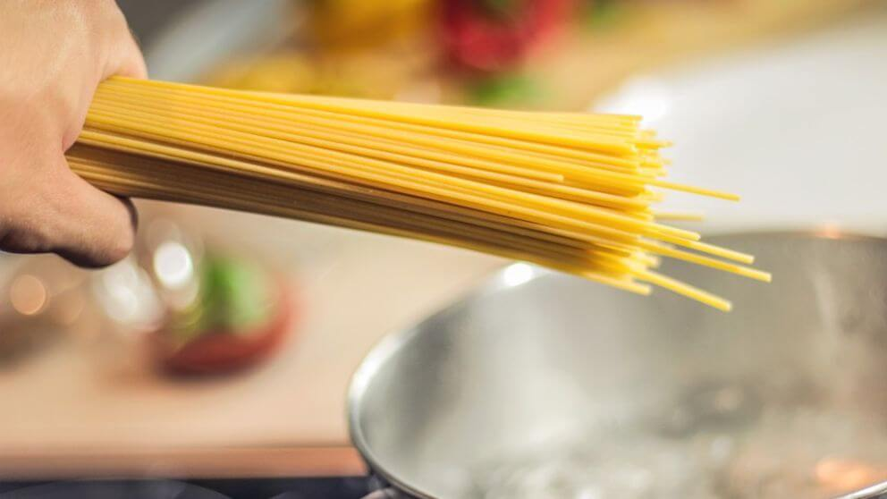

Familia P√©rez Frutas: kilo y medio de platano üçå Verduras: 1 kg de calabacitas tiernas üéÉ  30 pesos de brocoli ü•¶ 1 lechuga grande ü•ó Carnes: 1 kg de carne de res ü•© Otros: 3 litros de leche ü•õ  2 paquetes de Spagetti del no 2 üçù
Familia González Frutas: 1 kg de manzanas üçé una sandia grande aprox 5 kg üçâ Verduras: 2 kilos de aguacates ü•ë 1 lechuga grande ü•ó Carnes: 1 kg de pollo üçó Otros: 1 kg de Arroz üçö
Familia Hernández Frutas: 3 pi√±as grandesüçç Verduras: 2 lechuga grandes ü•ó Carnes: paquete de 30 hamburguesas üçî Otros: 1 catsup grande üçÖ 1 kilo de queso amarillo üßÄ